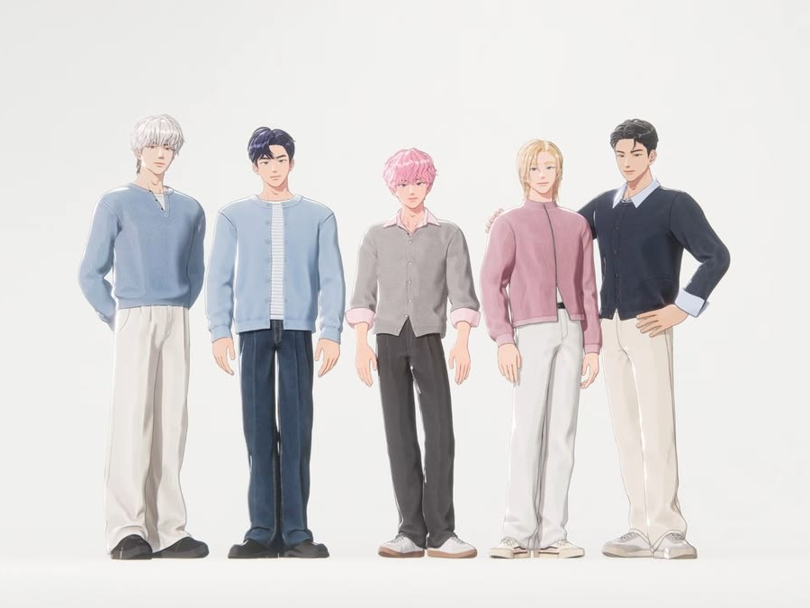
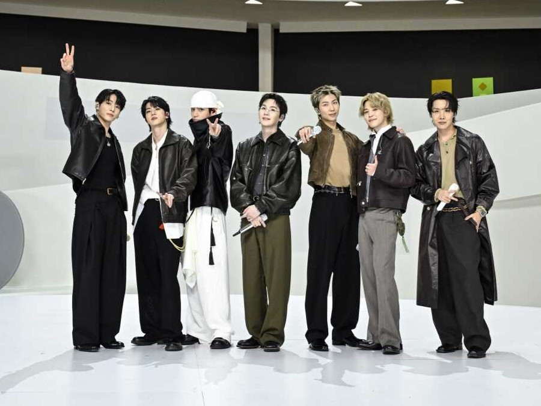
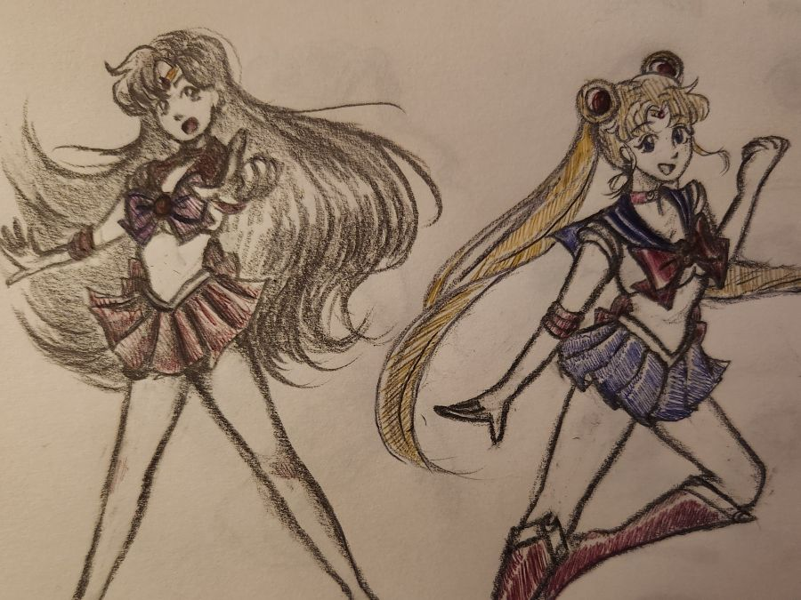
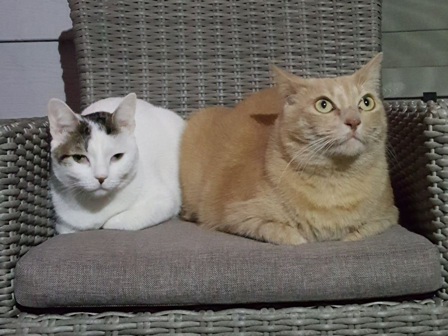

PLAVE
My current favorite Kpop group is PLAVE. They are virtual idols that utilize motion capture technology. They produce their own music, have a unique world building and lore, and are absolutely hilarious.

BTS
I've been a fan of BTS for 10 years! I love their new album "Arirang" so much and I can't wait to see them perform live in September!

Drawing
I've been drawing for a long time. Though my improvement feels slow, my style is much different than how it was 10 years ago! I recently purchased a drawing tablet to improve my digital illustration skills.

Cats
I love cats, especially my own. Pumpkin is 12 years old, resembles Garfield the cat, and loves lying down in the same spots. Purrl is 9 years old, much more agile, and is quite shy.